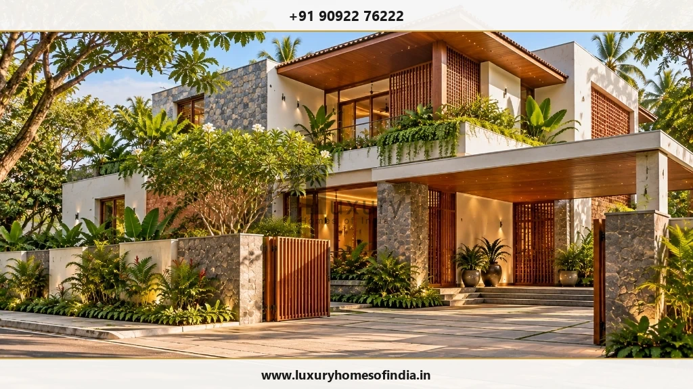
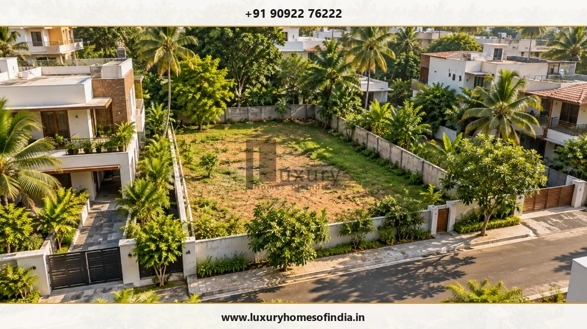
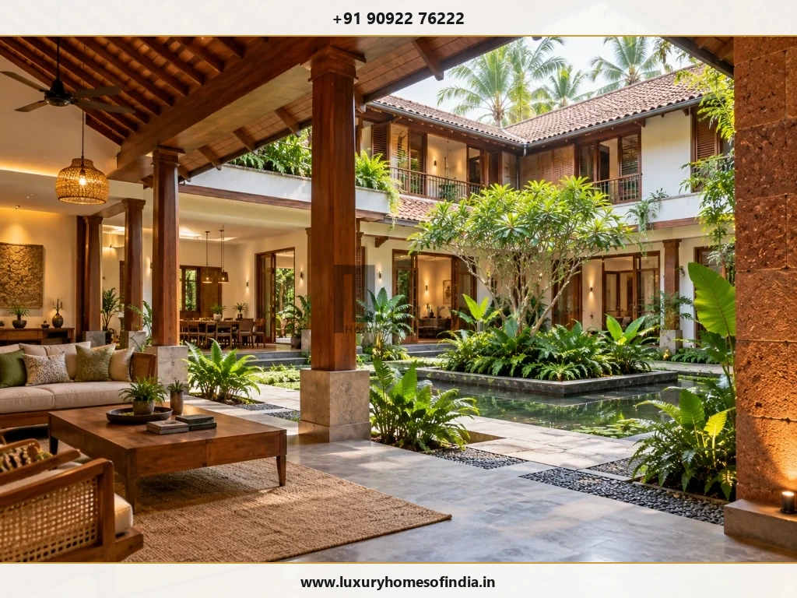

Home Building Approval in Chennai
Understand the approvals before you finalise your home design.
Key Takeaways: Chennai Home Approvals
- Jurisdiction: Applications inside Greater Chennai Corporation limits follow GCC Town Planning online scrutiny, while specific development categories involve CMDA planning permission.
- Dual Permissions: Planning permission governs land use, FSI, height, and setbacks; building permits sanction actual construction execution.
- Registered Professionals: Applications must be submitted through a Council of Architecture registered architect or GCC registered engineer (RE/RA).
- Pre-Design Review: Plot boundaries, road width, legal title, and site constraints must be verified prior to freezing architectural elevations.
- Compliance: Construction must adhere strictly to sanctioned plans under Tamil Nadu Combined Development and Building Rules (TNCDBR 2019).
Building a home in Chennai involves more than preparing an architectural plan. Your property's location, jurisdiction, proposed use, site characteristics and applicable development controls can influence what can be designed and approved.
Understanding these requirements early can help you avoid designing around assumptions that later need to change.
At Luxury Homes of India, approval coordination forms part of the published residential project offering. Discuss your site, proposed home and the support required before finalising the project scope.
If you are researching home building approval in Chennai, start by confirming the authority, application route and current requirements that apply to your property.
Discuss Your Building Approval Requirements
Connect with Luxury Homes of India technical coordination team to evaluate your plot jurisdiction, development controls, and required submission documents.

Which authority handles a home-building application in Chennai?
There is no single application route that should be assumed for every property described as being in Chennai.
Greater Chennai Corporation (GCC) publishes procedures for planning permission and building permits for specified categories of buildings, while applications outside those categories may involve the Chennai Metropolitan Development Authority (CMDA). GCC also identifies different processing routes based on building type, plot area, and height.
Before preparing the submission, confirm:
- Jurisdiction: The property's exact location and municipal jurisdiction.
- Authority: The applicable local body or planning authority.
- Category: The proposed land use and building category.
- Procedure: The applicable application procedure (GCC online portal vs CMDA).
- Clearances: Any additional clearances relevant to the site (CRZ, PWD, NHAI, or Heritage considerations).
Your authorised professional should verify these details against the current requirements for the specific proposal.
Planning permission and building permit
Planning permission and a building permit are related, but they should not automatically be treated as the same approval.
GCC's published procedure refers to planning permission, where applicable, together with building permit requirements under the Tamil Nadu Combined Development and Building Rules (TNCDBR 2019). The appropriate process depends on the property and proposed development.
Ask your project team to establish:
- Required Permissions: Which permissions are required for your exact plot.
- Drawing Responsibilities: Who prepares the application drawings and structural calculations.
- Submission Responsibility: Who is responsible for the professional submission on the online portal.
- Statutory Charges: Which statutory charges and infrastructure levies may apply.
- Pre-Construction Compliance: What needs to be completed before construction begins on site.
The objective is not simply to obtain a document. It is to establish a clear approval pathway for the proposed home.

What happens in the GCC application process?
For projects handled through the Greater Chennai Corporation process, GCC's published procedure describes a sequence beginning with the applicant's registration and site details, followed by selection of a registered architect or registered engineer. The selected professional can then undertake the site visit, collect the required documents, prepare drawings and submit the application online for scrutiny.
The process can involve:
- Registration: Applicant registration and submission of site details on the official portal.
- Professional Selection: Selection of the Council of Architecture registered architect or GCC registered engineer.
- Site Inspection & Documents: Site inspection and document collection by the registered professional.
- Drawing Preparation & Upload: Preparation and online submission of CAD architectural drawings formatted to authority specifications.
- Online Scrutiny: Automated online scrutiny against applicable development regulations and building rules.
- Review & Clarification: Authority review and requests for additional documents or clarification, where required.
- Fee Assessment: Assessment and online payment of applicable statutory charges.
- Permit Issuance: Issue of the final building permit and sanctioned plan through the online portal.
This is a useful framework, but your project's actual route and requirements should be confirmed against the current authority procedure.
Check the plot before finalising the design
A desirable location does not automatically establish that the proposed home is permissible.
The site should be assessed against its planning context and the requirements applicable to the proposal. CMDA's published planning-permission material identifies land-use conformity and compliance with applicable development regulations as matters considered in planning permission.
Before the architectural design is finalised, establish the available information about:
- Ownership Records: Ownership, Patta, Chitta, and property records.
- Boundaries & FSD: Site boundaries, dimensions, and Field Measurement Book (FMB) sketches.
- Access Roads: Access and road width conditions (abutting road width directly impacts permissible height and FSI).
- Zoning: Applicable land use zone (Primary Residential, Mixed Residential, etc.).
- Existing Structures: Existing structures and previous demolition/sanction records.
- Development Restrictions: Applicable development restrictions, setbacks, and height limits.
- Clearances: Relevant site-specific clearances (e.g., proximity to water bodies, railway tracks, airport funnel zones).
Planning approval should not be treated as a substitute for independent legal review of property title. Where ownership, title or other legal matters require specialist advice, obtain it separately.
Design around the applicable requirements
Development controls can influence the building's layout, size and configuration.
Depending on the proposal, your design team may need to verify matters such as:
- Permissible Development: Floor Space Index (FSI) and plot coverage.
- Setbacks: Front, rear, and side open space setbacks mandated by TNCDBR 2019.
- Height & Floors: Overall building height and maximum number of floors.
- Parking: Covered car parking requirements based on total floor area.
- Access & Circulation: Gate width, driveway access, and staircases.
- Building Use: Residential occupancy classifications.
- Safety & Structural Integrity: Structural stability certificates and earthquake-resistant design compliance (in coordination with a qualified structural engineer).
- Environmental & Ground Inputs: Rainwater harvesting design, solar panels, and foundation depth guided by soil testing reports.
Avoid relying on a setback, floor-area or height figure taken from another property. Requirements should be confirmed for the particular site and proposal.
Prepare the right documents
There is no universal checklist that should be assumed to apply to every application.
GCC's published procedure describes document collection by the registered architect or registered engineer, while the applicable authority's current checklist should be used to establish the final submission requirements.
Depending on the application, the team may need to assemble:
- Property Records: Sale deed, Patta, Encumbrance Certificate (EC), and Property Tax receipts.
- Survey Sketches: Site measurements, FMB sketch, and boundary survey details.
- Architectural Set: Detailed key plans, floor plans, sections, elevations, site plan, and rainwater harvesting layout formatted for online scrutiny.
- Declarations: Relevant professional declarations by registered architect/engineer and owner affidavits.
- Engineering Information: Structural stability certificate and foundation design calculations.
- Previous Approvals: Existing approval records or demolition permits, where applicable.
- Clearance Certificates: Additional clearance documents (NOCs) where site conditions mandate.
The safest approach is to obtain the current checklist for the actual application route rather than relying on a generic online list.
Approval coordination with Luxury Homes of India
LHI's published Chennai offering describes approval coordination within its residential turnkey construction process.
For your proposed project, clarify the exact scope before appointment. In particular, confirm whether the agreed scope covers:
- Initial Planning Review: Pre-design site constraint and land-use assessment.
- Application Drawings: Preparation of complete CAD submission sets adhering to GCC/CMDA digital formats.
- Professional Coordination: Coordination with Council of Architecture registered architects and GCC registered engineers.
- Submission Support: Management of online portal submission and documentation tracking.
- Query Resolution: Technical responses and drawing clarifications during authority scrutiny.
- Drawing Revisions: Revisions arising from authority requirements or site observations.
- Fee Payment Management: Coordination of statutory fee assessments and payment schedules.
- Document Collection: Review, verification, and collection of sanctioned plans and building permits.
These responsibilities should be written into the project scope rather than assumed. Approval coordination is offered primarily as part of LHI's comprehensive luxury home planning and turnkey design-and-build engagements, with standalone appointments evaluated case-by-case based on plot location and design stage.
Understand the approval-related costs separately
Approval-related expenditure contains different components that should be budgeted separately.
| Cost Category | What to Clarify |
|---|---|
| Professional Fees | Drawing preparation, scrutiny formatting, site visits, and professional coordination by registered architect/engineer |
| Statutory Charges | Official scrutiny fees, infrastructure development charges, shelter charges, and building license fees assessed by GCC/CMDA |
| Additional Services | Topographical land surveys, soil investigation reports, or specialist environmental reports where required |
| Revisions | Fee implications for drawing modifications arising from homeowner layout changes or authority queries |
| Other Expenses | Applicable GST, legal title verification costs, and separately identified out-of-pocket expenses |
CMDA's published approval material shows that charges can include different categories and that assessments can vary with the proposal. Obtain the applicable assessment rather than relying on a generic quotation.

What can affect the approval programme?
The approval timeline can be influenced by the completeness of the submission, changes to the proposal, authority queries, required clarifications, fee payments and additional clearances.
Your project agreement should distinguish between:
- Preparation Phase: The professional team's drawing and survey preparation programme.
- Homeowner Milestones: Homeowner document supply and layout decision deadlines.
- Authority Review: Statutory review and online scrutiny duration.
- Revisions & Queries: Time required to respond to authority clarifications.
- Fee Settlement: Timely payment of statutory charges.
- Permit Issuance: Final sanction order and building permit issuance.
An estimated programme should not be presented as a guaranteed approval time.
Keep construction aligned with the approved proposal
Approval is not the end of the compliance process.
Once permissions are obtained, the approved drawings and conditions should remain important project references during execution. If you want to change the design during construction, ask the authorised professional whether the change affects the approved proposal or requires further approval.
Do not assume that a change is permissible simply because it is technically possible to build. Working with a dedicated residential project manager ensures site execution remains aligned with sanctioned limits.
Frequently asked questions
Plan your home with the approval requirements in view
Bring your property information and proposed design to an early technical discussion.
Speak with Luxury Homes of India about coordinating the architectural brief, application requirements and construction scope for your Chennai property.
Start Your Chennai Home Approval Discussion
Get clarity on your plot's jurisdiction, TNCDBR 2019 compliance, drawing requirements, and turnkey construction scope.